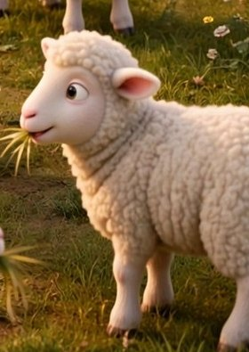

Will’s Flock Trivia
Six questions from your tour of the farm, Will — and no losing here. Every right answer gathers a sheep up top. Miss one, and we’ll just tell you the story and let you tap again. Gather all six, and see what the flock says.
Psst — when you get home, open this on the biggest screen you’ve got. The film and the field fill the whole room.
🎮 Controller connected — drive with the D-pad or stick, pick an answer with the A button.
Six questions, or the whole basket?

Sheep gathered: 0 of 6
Flock figures as counted on the barn board — October 15, 2026.
How many are in the flock tonight?
Not quite — 193 joined this week, and 38 is the countries. The whole flock is bigger. Try again, friend.
That’s right — 841 in the flock, every one counted on the barn board — because every single one matters.
Answer: 841 — the whole flock, counted on the barn board, because every single one matters.
✓ Counted — sheep 1 is in.
In John 10:16, who does Jesus say He must bring?
Close — but Jesus says there are more, outside the fold, and He must bring them too. Have another look.
That’s right — “I have other sheep… I must bring them also. They will hear my voice. Then there will be one flock and one shepherd.”
Answer: His other sheep — “I must bring them also… there will be one flock and one shepherd.” (John 10:16)
✓ Counted — sheep 2 is in.
How many chapters are in the Audio Bible?
Not quite — 376 is how many videos are on the channel. The Audio Bible is the whole Book, read aloud. Try once more.
That’s right — 1,503 chapters, the whole Bible read aloud in Grandpa Teddy’s voice, finished spine to spine, and free for anybody.
Answer: 1,503 — the whole Bible, read aloud in Grandpa Teddy’s voice, finished spine to spine.
✓ Counted — sheep 3 is in.
What does the Bible app cost?
No, friend — nothing at all. That’s the whole point of this farm. Give it another tap.
That’s right — free. The Word is free. Always has been; always will be. Read it or listen, it won’t cost you a thing.
Answer: Nothing — it’s free. The Word is free. Always has been; always will be.
✓ Counted — sheep 4 is in.
From how many countries have neighbors watched?
Not quite — it’s more than 12, and an honest count never rounds up to 50. The board tells it plain. Try again.
That’s right — 38 countries, neighbors who’ve stopped a while to hear the Word, every one written down and counted.
Answer: 38 — countries gathering, every one written down on the board and counted.
✓ Counted — sheep 5 is in.
In Luke 15, when one sheep is lost, what does the Shepherd do?
Not quite — He doesn’t wait, and He doesn’t settle for counting who’s left. The one matters too much for that. Try again.
That’s right — He leaves the ninety-nine and goes after the one until He finds it — then carries it home on His shoulders, rejoicing. Every single sheep gets special treatment.
Answer: He goes after the one until He finds it — then carries it home on His shoulders, rejoicing. (Luke 15)
✓ Counted — sheep 6 is in. The whole flock!
That’s the whole flock, Will — every single one counted.
Including the one this was made for.
Made for Will, from Jason at Circle K. We plant. We water. God gives the increase.
Playing on a TV? A plugged-in game controller works here too — D-pad to choose, A to answer.